Tools for CodingNomads Mentors¶
This page contains a collection of quick how-to guides for using the necessary tools to be an effective CodingNomads Mentor. It starts of with a list of the absolutely essential tools, then describes different tools and how to use them in more detail.
- Tools for CodingNomads Mentors
Essential Software¶
You'll need these tools in order to be able to mentor a CodingNomads student:
- TopTracker
- Google Calendar with access to CN Mentorship calendar
- Zoom
- Google Photos
- Learning Platform
- GitHub
Please make sure to install these programs and request access, where necessary. You'll find more detailed description in the dedicated sections.
Time Tracking With TopTracker¶
Please use TopTracker to record your time spent mentoring.
Set Up TopTracker¶
To get started, please follow these steps:
- Download TopTracker for Desktop
- Sign up for a free account by clicking Get Started as a Freelancer
- Create a new Project called Onboarding
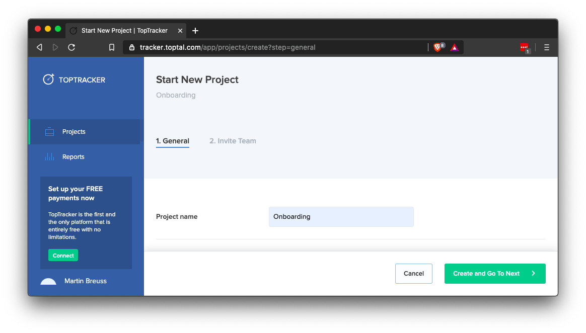
- Invite Ryan or Martin to the project as a Supervisor
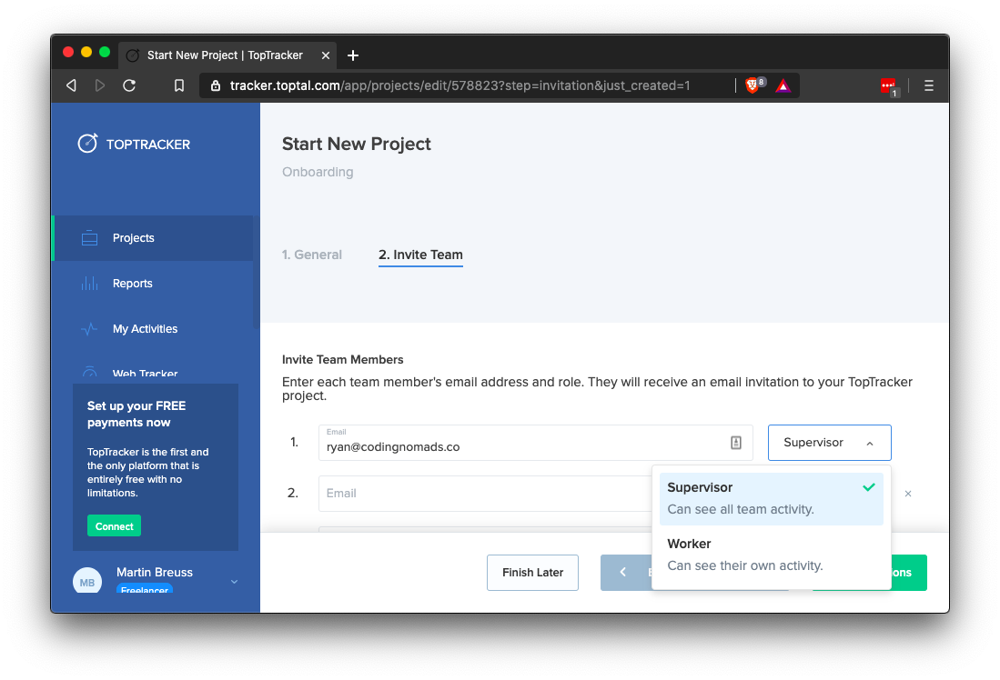
- Track time you spent on onboarding under that project
Skip Payoneer Setup: We don't use Payoneer for payment. You can skip that section while setting up your TopTracker account.
Tracking your mentorship time will work similarly. In the next section, you'll see how you'll track your mentorship time once you've started working with a student.
Track Mentorship Time¶
Once you've started working with a student, we will set up a Project with your student's name and invite you as a freelancer. From then on, you'll track the time you spend mentoring this student in this dedicated project. If you are working with multiple students, make sure to record your time for each student in the right project.
To minimize your effort, you can limit your tracking entries to the following keywords:
- call
- forum
- slack
- code review
- organization
- team meetings
Watch the screencast below, which shows you how mentorship time tracking with TopTracker works in practice:
Please follow this workflow to keep track of the time you spend working with your student. Your compensation is based on the recorded time.
Scheduling With Google Calendar¶
You'll use Google Calendar for scheduling your student calls. If you don't have a Google account, please sign up for one and accept the invite to our shared mentor calendar.
If you haven't received an invitation to the shared mentor calendar, please request an invite by writing to
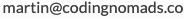
.Booking Meetings With Calendly¶
To make life easier for you, you can use Calendly. It's a handy tool that allows you to block out your availability and let students book meeting times with you through a shareable link.
Using their free tier you can specify the times you are available for meetings, then send your student a link where they can choose a time that fits well for them. They can then book a meeting with you at that time that works for you both.
Calendly can significantly reduce the effort needed to find a time that works for both you and your students. It also integrates with Google Calendar.
Recording Meetings On Google Calendar¶
Every student meeting you have needs to be recorded on the shared CN Mentorship Calendar:
We use this information to keep track of how far along students are in their subscription.
This means you need to:
- schedule every recurring student meeting on this calendar
- update any changes to your student meetings on this calendar
Sometimes, students will need to cancel or move a meeting. Make sure that this is reflected on the CN Mentorship Calendar. We can only guarantee payment for meetings that show up on this calendar.
Video Sessions and Recordings With Zoom¶
We use Zoom for 1-on-1 calls, because it allows screen sharing and screen recording. Watch the official video walkthrough for installing the client and scheduling a meeting.
Set Up Zoom¶
Follow the official steps to get started with Zoom:
- Download Zoom client
- Install the browser extension (same page, further down)
- Connect your Google account
Installing the browser extension is optional, and you can schedule all your meetings directly from the Zoom client, if you prefer.
Schedule A Student Meeting¶
This screencast and the text below it walk you through how to schedule a meeting using Zoom, and how to make sure it's recorded on the shared CN Mentorship Calendar.
The text below sums up the content of the video in writing, and shows how to schedule the meeting using Zoom's browser extension:
Click Schedule a Meeting in the browser extension:
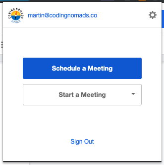
You'll see the Zoom settings dialog pop up:
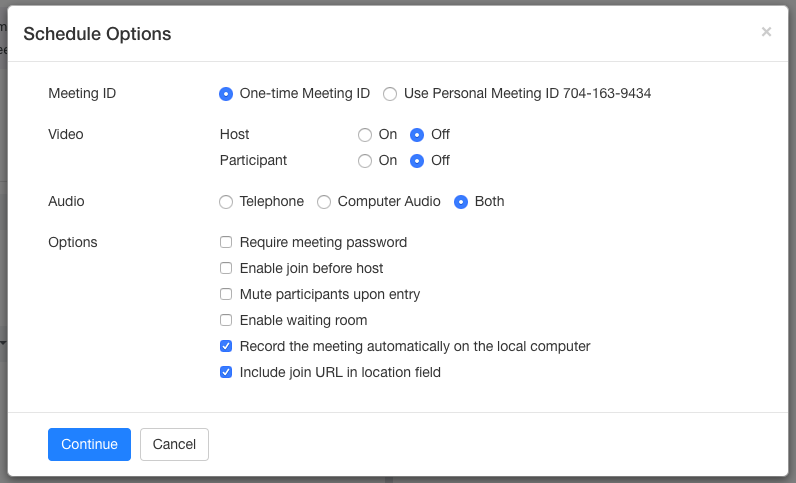
You can select Record the meeting automatically on the local computer so you won't have to remember to hit the Record button when you start a student meeting.
Click Continue. Zoom will take you to a Google Calendar event creation dialogue that has the Zoom-related information already filled in.
Set the meeting time and use the scheduling options to make it a recurring meeting:
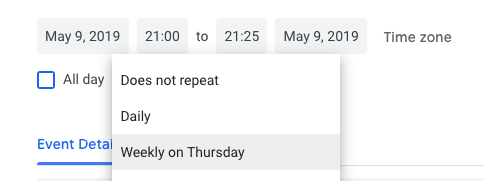
Use the calendar dropdown to change the calendar from your default personal calendar to our shared CN Mentorship Calendar:
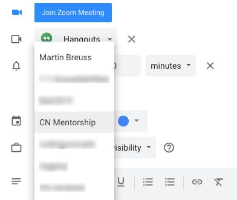
Finally, invite your student by adding their email address and send the message:
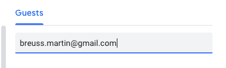
Your Zoom link will be included in the calendar invite the student receives. Double-check that the meeting you set up is a recurring event, and that it's recorded in the CN Mentorship Calendar. It should appear in that calendar also for the coming week.
Record A 1-On-1 Session¶
If you set the meeting to record automatically, as suggested above, you can skip the first steps. When your meeting begins, make sure that the recording is running.
If you did not set up the automatic recording, click Record -> Record on this computer or click the Record button in the options bar at the bottom once your student meeting has started:
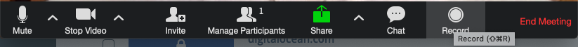
Once your call is finished, click End Meeting and then End Meeting for all:
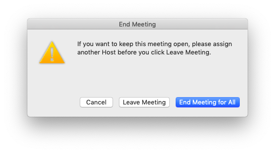
You'll then get a pop-up telling you that the video is being processed:
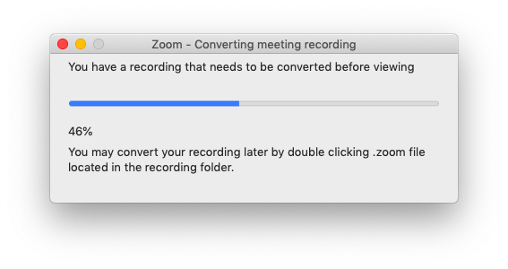
When the processing is done, the recording will be in your ~/Documents/Zoom/ folder, titled with the date of your session. Each session will have its own folder with a few files in it:
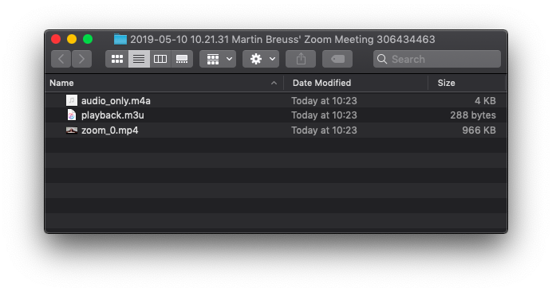
The only file you need is the .mp4 file, that you'll upload to the shared folder.
Upload The Recorded Session¶
Please rename the zoom_0.mp4 file with a self-explanatory title, e.g.: date_studentname_topic.mp4:
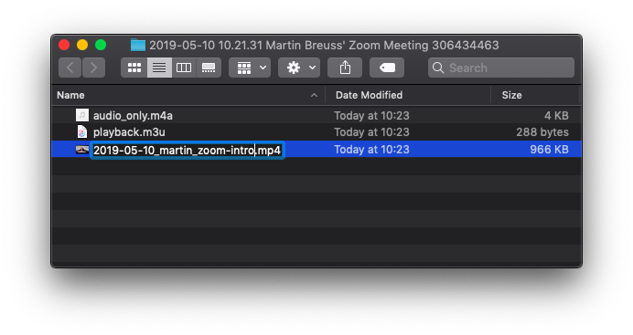
Then upload the recording to your shared Google Photos album (see below) by simply dragging it there.
After the video has finished uploading, you can delete it from your local machine.
Storage With Google Photos¶
Google Photos allows free video uploads and storage for the video resolution that we are working with. That means the screen recordings won't count against your Google storage space quota.
The screencast below walks you through:
- how to set up a new Google Photos album
- how to share it with us and your student
- how to upload a recorded session
The text below walks you through the same topics of the screencast in written form.
Navigate to Google Photos (and sign in to your account if necessary).
Create a new Shared Album in your Google Photos account for each student:
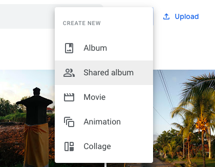
Name the album with your name and your student's name:
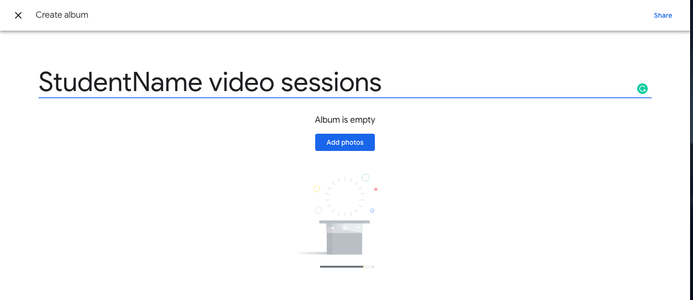
Share the album with that student as well as with :
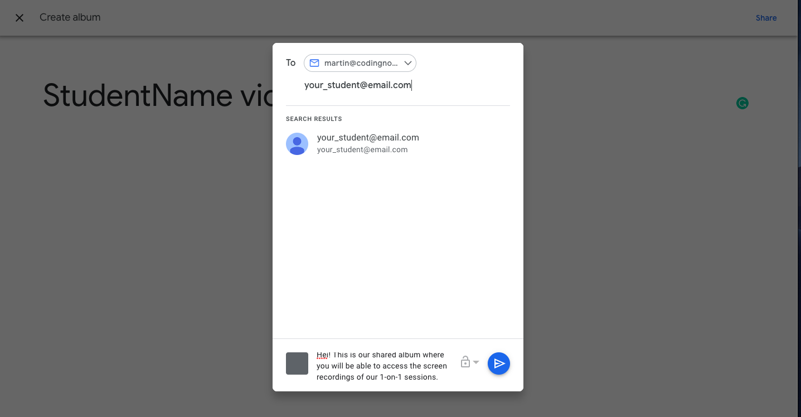
When sharing the folder, you can add the following message to the invite:
Hi! This is our shared album where you'll be able to access the screen recordings of our 1-on-1 sessions.
Upload the Zoom recordings of meetings with that student to the student-specific albums by dragging the file onto the open album window:
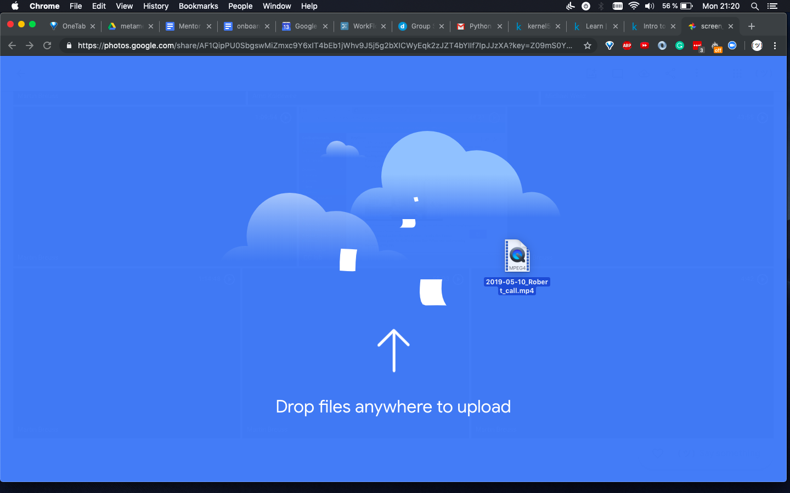
Uploading the screen recordings of your 1:1 sessions allows your students to check back on topics that you discussed and helps them in their learning process.
Progress Check-Ins With The Learning Platform¶
You'll need to keep track of how your student is progressing through the course materials in order to give them actionable feedback and help them keep moving.
Make sure that you have an active account on the CodingNomads learning platform. After you've completed onboarding, you'll get upgraded to the role of Non-editing Teacher to be able to access everything. If you need that access and don't have it yet, please contact .
To find your students' progress logs, go to the main course page of your course. You'll see a button in the top left called Participants. Click it:
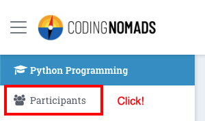
This brings you to a page with a list of all course participants. Use the search field to find your student:
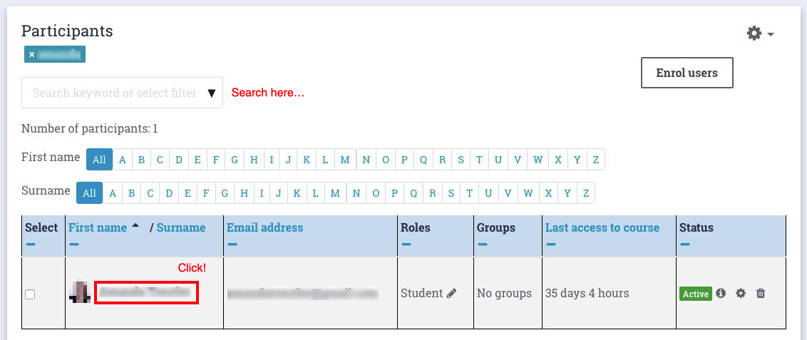
Then click on the student's name to access their profile page.
Tip: Bookmark this page for each of your students, so you'll be able to access it quickly. Checking up on your students' progress shoud be a simple routine task that doesn't take much of your time.
On the right of that page, you can see a Reports section. Feel free to explore the different types of reports:
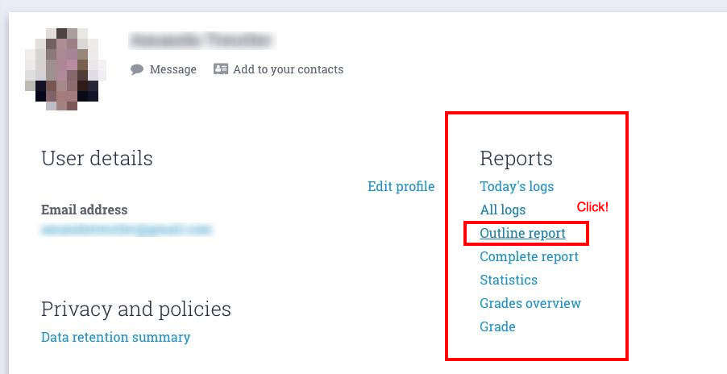
The Outline Report gives you a quick overview of which resources your student accessed, how often, and when. When a student has accessed a page, it'll show a view count and a date next to the resource name:
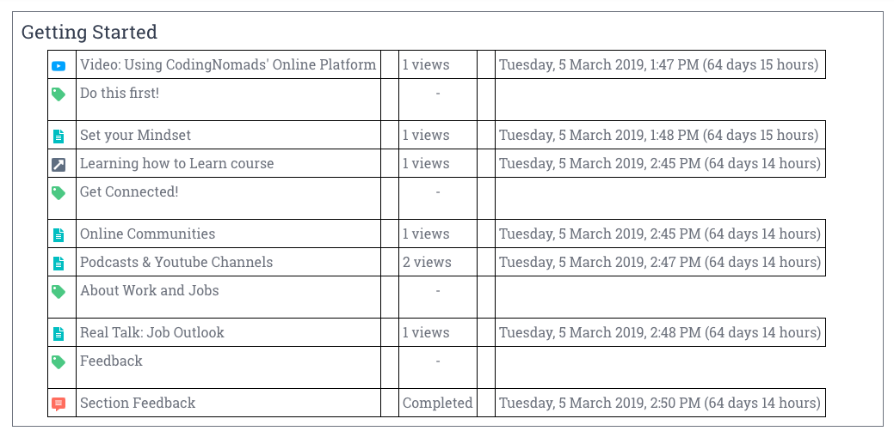
If they haven't accessed the resource yet, these two columns will be missing:
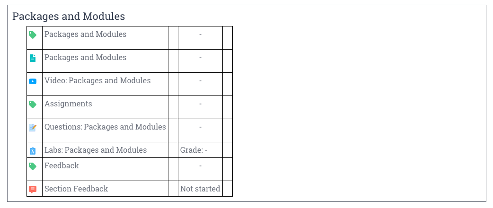
The Outline Report allows you to quickly understand where your student is currently at, whether they are making progress, and it can help you understand what they might be struggling with.
Code Reviews With GitHub¶
We use GitHub inline comments for code reviews. Check out the forum post Giving and getting code reviews for suggestions on how to give helpful and effective code reviews.
If you are not familiar with giving code reviews in GitHub, check out our Guide on giving GitHub Reviews.
Feedback With Trello¶
We welcome your feedback and suggestions! To keep them organized, please add them to the relevant Feedback Trello Boards.
Once you complete onboarding, we will add you to the CN Feedback team so you can access the board home page.
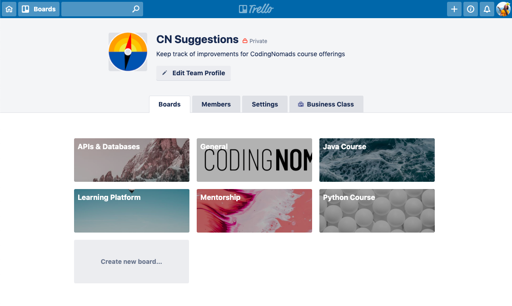
Each board has the same structure with the following columns:
- Backlog
- Doing
- Done
- Wishlist
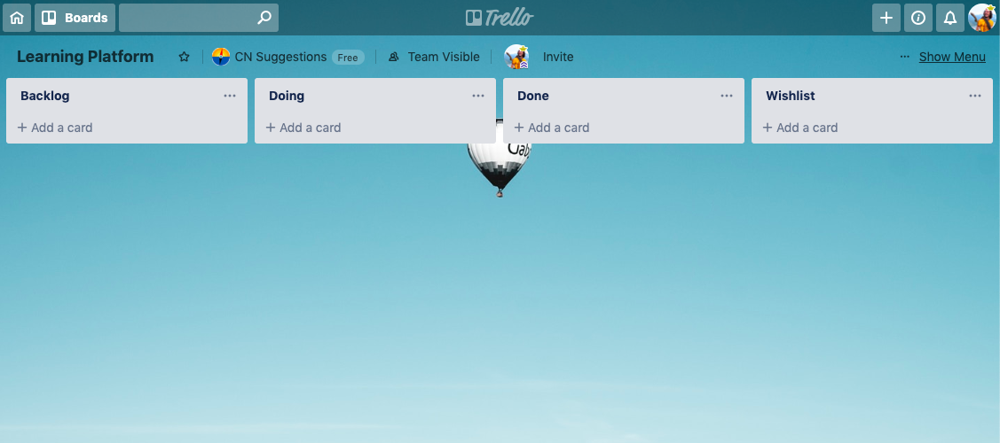
Please add your bug reports to Backlog and your improvement suggestions to Wishlist.
Include every useful piece of information that you can provide, to make it easier for us to tackle the challenge.
A Trello card can include:
- Comments
- Screenshots
- Links to course sections
- Links with more info, code repos, etc.
- Labels
- Members
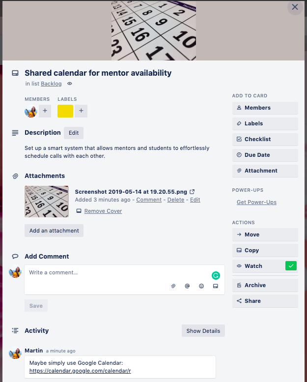
Please add yourself as a Member to the card so that it will be easier for us to get in contact if we need more information.
Student Communication Templates¶
You can set communication snippets up as Gmail templates or copy-paste the content from the resource linked below. Please replace the fields marked with {ALL_CAPS}.
Feel free to personalize as much as you want to. These templates are meant to make it quicker for you to get started communicating with your students, but personal communication is priceless for good mentorship results.
Please add any relevant repeating communications that you create so that other mentors can benefit from it, or let us know when you think that something is missing.
Other Useful Tools¶
The following tools have been useful for some mentors. You can include them in your workflow if they seem helpful for you.
Worldtimebuddy¶
A great tool for scheduling across multiple time zones. I use this all the time.
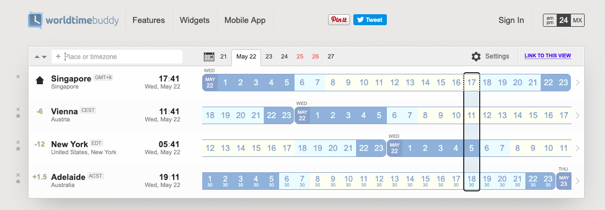
Doodle¶
Helpful for remotely deciding for a call time, especially when there are many people involved. Can also be helpful for scheduling your first orientation call with your student.
However, setting up your Calendly account is probably more convenient and easier to handle.
There¶
A MacOS app that helps keeping track of all your students' current times across multiple time zones. Nicely integrated in OS X and helps to quickly check up on whether someone's up or sleeping.
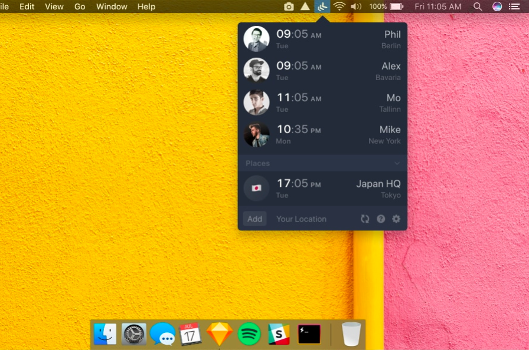